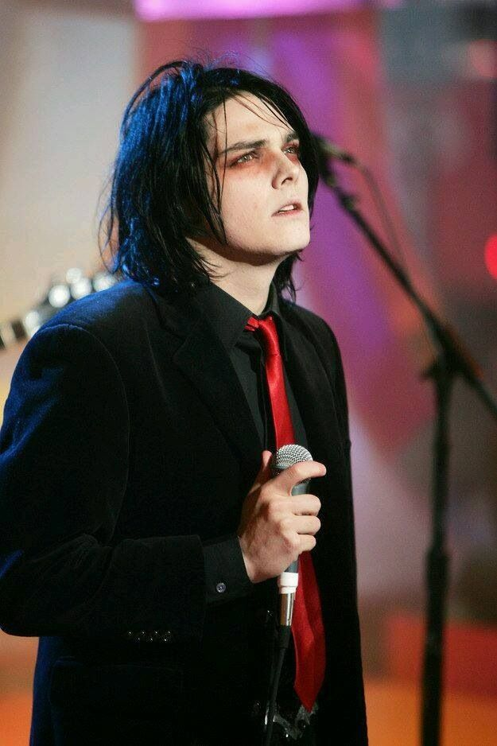
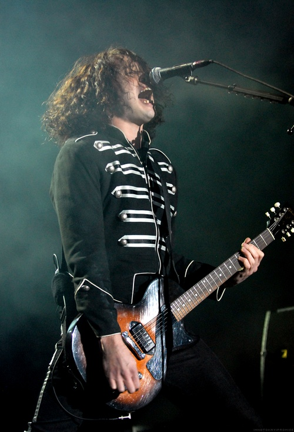
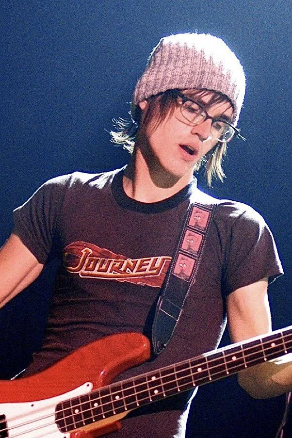
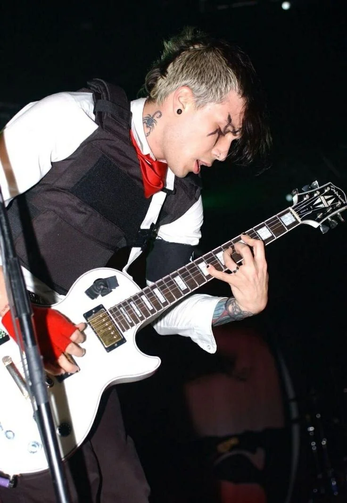
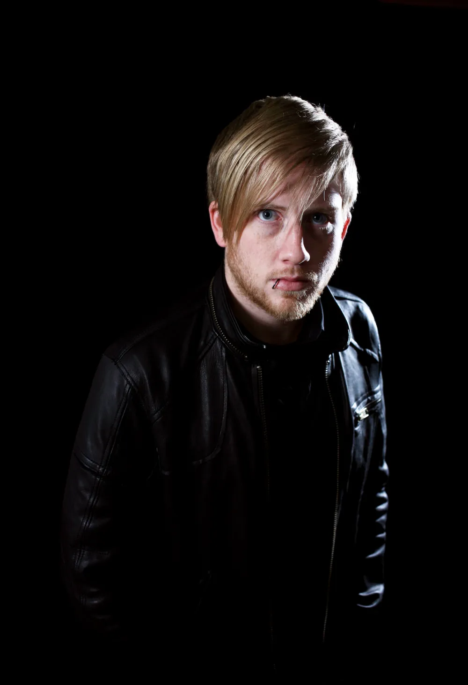

NEWARK, NEW JERSEY - 2001
MY CHEMICAL
ROMANCE
"Não nos interessa o sucesso. Nos interessa mudar vidas."
- Gerard Way
A BANDA
My Chemical Romance é mais do que uma banda.
É um movimento que salvou vidas.
Formada no rescaldo emocional do 11 de setembro, a banda transformou trauma em catarse coletiva. Com uma mistura de punk, hardcore melódico, glam rock e teatro, criou um universo sonoro e visual que atravessou gerações, continentes e fronteiras de gênero.
Os Músicos
INTEGRANTES

A mente por trás de tudo. Gerard Way fundou a banda dias após assistir ao colapso das Torres Gêmeas ao vivo pela TV — o trauma que transformou em catarse coletiva para milhões. Sua voz abrange um range dramático e operístico, e sua presença de palco é teatral, quase litúrgica. Fora da música, criou "The Umbrella Academy", a graphic novel que virou série de sucesso na Netflix.
"Nada me deu mais satisfação do que escrever músicas que fizeram pessoas se sentir menos sozinhas."

O coração musical da banda. Ray Toro é o guitarrista mais técnico e o principal arquiteto sonoro do MCR. Seu trabalho combina riffs pesados de punk/metal com melodias emocionais que nunca perdem sofisticação. Reconhecido pelo afro icônico, é considerado um dos grandes guitarristas do rock alternativo dos anos 2000.
"Tocar guitarra me salvou quando eu não tinha nada mais."

Irmão de Gerard e a espinha dorsal rítmica da banda. Mikey Way é famoso por sua presença de palco cool e quase impassível — um contraste intencional com o teatro do front-man. Sua linha de baixo é o pulso que mantém o MCR ancorado mesmo nos momentos mais caóticos.
"Espero que sejamos a banda que passe a tocha adiante. Quero inspirar jovens a dizerem: 'É isso que eu quero fazer da vida.'"

A energia caótica e punk da banda. Frank Iero entrou no MCR em 2004 e transformou o ao vivo num ato performático de intensidade física. Conhecido por se jogar pelo palco e mergulhar na plateia, é o espírito punk que equilibra a grandiosidade teatral de Gerard. Também tem uma carreira solo bem-sucedida com a frankie and the witch fingers.
"Tudo o que já fizemos foi um risco... Gostamos de testar os limites, e jogar pelo seguro não pareceria verdadeiro para nós."

O baterista que gravou os anos de ouro da banda, incluindo "The Black Parade". Bob Bryar veio do circuito de roadies e técnicos de som, o que deu ao seu estilo uma precisão brutal. Saiu em 2010 por problemas de saúde, mas acabou falecendo em novembro de 2024. Sua bateria em "Welcome to the Black Parade" é uma das mais reconhecíveis do rock moderno.
"Fui de técnico de som a baterista do maior álbum da minha geração."
QUATRO ATOS
DISCOGRAFIA
CRONOLOGIA
HISTÓRIA
-
2001
Gerard Way funda a banda em Newark, New Jersey, dias após assistir ao 11 de setembro ao vivo pela TV — o trauma que inspirou a criação do grupo.
-
2002
Debut "I Brought You My Bullets..." pelo Eyeball Records. A banda começa a turnê pelo circuito underground do punk/emo americano.
-
2004
"Three Cheers for Sweet Revenge" chega ao disco de platina. "Helena" vira hit global e a banda explode no cenário alternativo mundial.
-
2006
"The Black Parade" é lançado e se torna um fenômeno cultural. A banda enche arenas e domina o MTV Europe Music Awards.
-
2008
Frank Iero sofre acidente grave de ônibus durante turnê europeia. Problemas internos começam a surgir na banda.
-
2010
Danger Days chega com visual completamente novo: néon, pistolas de raio laser e alter-egos ficcionais.
-
2013
22 de março: a banda anuncia o fim numa única declaração no site oficial. O mundo do rock alternativo entra em luto.
-
2019
Reunião anunciada com vídeo misterioso em outubro. O show de retorno em Los Angeles quebra recordes em minutos.
-
2022
Retorno completo às turnês mundiais. Shows esgotados em minutos em todo o planeta.
-
2024
Lançamento de "The Black Parade" ao vivo e novas datas de turnê confirmadas para 2025.
"Somos a banda que vai salvar o rock and roll. E se não conseguirmos, pelo menos vai ser um baita espetáculo."
- Gerard Way
Impacto & Presente
LEGADO
O Impacto no Movimento Emo
O MCR chegou num momento em que o emo era visto como nicho underground. Ao transformar temas de saúde mental, luto e alienação em performances teatrais de arena, a banda legitimou emocionalmente um gênero que era constantemente marginalizado pela mídia mainstream. "The Black Parade" em particular elevou o emo a uma forma de arte comparável ao rock progressivo dos anos 70 — complexo, conceitual e ambicioso. A Billboard o classificou como um dos maiores álbuns de rock da década de 2000. A influência do MCR pode ser ouvida claramente em artistas como Billie Eilish, Olivia Rodrigo, Palaye Royale, Waterparks, e dezenas de outras bandas que cresceram com seus discos como trilha sonora.
Onde Estão Hoje
Desde a reunião em 2019, o MCR tem se mostrado mais forte do que nunca. A banda percorreu o mundo em turnês sold-out, com shows que misturavam o repertório clássico com uma produção visual renovada. Em 2022 e 2023, a "Swoop" tour levou a banda à América do Norte, Europa, Austrália e Ásia — confirmando que a fanbase não apenas sobreviveu à separação de 6 anos, mas cresceu exponencialmente com a geração Z. Gerard Way continua trabalhando na The Umbrella Academy e em projetos solo. Frank Iero atua com sua banda solo. Ray Toro produz e colabora com artistas de rock alternativo. Mikey Way mantém-se ativo nos bastidores musicais.
curiosidades
O Nome
O nome "My Chemical Romance" foi tirado de um livro de Irvine Welsh ("Ecstasy: Three Tales of Chemical Romance"), o mesmo autor de Trainspotting.
The Umbrella Academy
Gerard Way escreveu a graphic novel "The Umbrella Academy" durante a turnê do Black Parade. Em 2019, virou série da Netflix com 4 temporadas.
Army of the Damned
Os fãs são chamados de "The MCRmy" — um exército dedicado que manteve a chama acesa durante os 6 anos de separação com tributos, covers e projetos próprios.
Saved Lives
Inúmeros fãs relataram publicamente que a música do MCR foi o que os impediu de cometer suicídio. Gerard Way frequentemente abordava saúde mental em entrevistas.
SNL & Mainstream
Em 2007, a banda se apresentou no Saturday Night Live — uma das aparições mais notáveis de uma banda de rock alternativo no programa.
A Reunião
Quando a reunião foi anunciada em 2019, o site oficial travou em minutos. Os ingressos para o show de Los Angeles esgotaram em menos de 10 minutos.